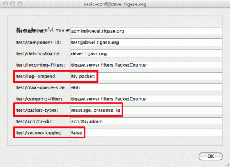

It might be hard to tell what the first important thing you should do with your new component implementation. Different developers may have a different view on this. It seems to me however that it is always a good idea to give to your component a way to configure it and provide some runtime settings.
This guide describes how to add configuration handling to your component. There is detailed Configuration API description available so again I am not getting deep into all details just the necessary code.
To demonstrate how to implement component configuration let’s say we want to configure which types of packets will be logged by the component. There are three possible packet types: message, presence and iq and we want to be able to configure logging of any combination of the three. Furthermore we also want to be able to configure the text which is prepended to the logged message and to optionally switch secure login. (Secure logging replaces all packet CData with text: CData size: NN to protect user privacy.)
Let’s create the following private variables in our component:
private String[] packetTypes = {"message", "presence", "iq"};
private String prependText = "My packet: ";
private boolean secureLogging = false;As the component configuration is maintained in a form of a (key, value) map, we have to invent keys for each of our configuration entry:
private static final String PACKET_TYPES_KEY = "packet-types"; private static final String PREPEND_TEXT_KEY = "log-prepend"; private static final String SECURE_LOGGING_KEY = "secure-logging";
There are two methods used to maintain the component configuration: getDefaults(…) where the component provides some configuration defaults and setProperties(…) which sets a working configuration for the component:
@Override
public Map<String, Object> getDefaults(Map<String, Object> params) {
Map<String, Object> defs = super.getDefaults(params);
defs.put(PACKET_TYPES_KEY, packetTypes);
defs.put(PREPEND_TEXT_KEY, prependText);
defs.put(SECURE_LOGGING_KEY, secureLogging);
return defs;
}
@Override
public void setProperties(Map<String, Object> props) {
super.setProperties(props);
if (props.get( PACKET_TYPES_KEY ) != null ) {
packetTypes = (String[]) props.get( PACKET_TYPES_KEY );
}
if (props.get( PREPEND_TEXT_KEY ) != null ) {
prependText = (String) props.get( PREPEND_TEXT_KEY );
}
if (props.get( SECURE_LOGGING_KEY ) != null ) {
secureLogging = (Boolean) props.get( SECURE_LOGGING_KEY );
}
}You do not have to implement the getDefaults(…) method and provide default settings for your configuration, but doing so gives you a few benefits.
The first from a developer point of view, you don’t have to check in the setProperties(…) whether the value is of a correct type or convert it from String to the correct type as it always be either the default or user provided. It will be of a correct type as the configuration framework takes care of the types comparing between the user provided settings and default values. So this just makes your setProperties(…) code much simpler and clearer.
Please note that currently Tigase allows changing properties automatically. Hence you should check each time if a given property was updated at the given call of setProperties().

Secondly this also makes the administrator’s life easier. As you can see on the screenshot, configuration parameters provided with default values can be changed via configuration ad-hoc commands. So the administrator can maintain your component durinmg run-time from his XMPP client.
Regardless, if you implemented the getDefaults(…) method or not you can always manually add parameters to the init.properties file.
The syntax in init.properties file is very simple and is described in details in the Admin Guide. As it shows on the screenshot the configuration parameter name consists of: component name, property key. To set the configuration for your component in init.properties file you have to append following lines to the file:
test/log-prepend="My packet: " test/packet-types[s]=message,presence,iq test/secure-logging[B]=true
The square brackets denote the property type, have a look at the Admin Guide documentation for more details.
And this is the complete code of the new component with a modified processPacket(…) method taking advantage of configuration settings:
import java.util.Map;
import java.util.logging.Logger;
import tigase.server.AbstractMessageReceiver;
import tigase.server.Packet;
public class TestComponent extends AbstractMessageReceiver {
private static final Logger log =
Logger.getLogger(TestComponent.class.getName());
private static final String PACKET_TYPES_KEY = "packet-types";
private static final String PREPEND_TEXT_KEY = "log-prepend";
private static final String SECURE_LOGGING_KEY = "secure-logging";
private String[] packetTypes = {"message", "presence", "iq"};
private String prependText = "My packet: ";
private boolean secureLogging = false;
@Override
public void processPacket(Packet packet) {
for (String pType : packetTypes) {
if (pType == packet.getElemName()) {
log.finest(prependText + packet.toString(secureLogging));
}
}
}
@Override
public Map<String, Object> getDefaults(Map<String, Object> params) {
Map<String, Object> defs = super.getDefaults(params);
defs.put(PACKET_TYPES_KEY, packetTypes);
defs.put(PREPEND_TEXT_KEY, prependText);
defs.put(SECURE_LOGGING_KEY, secureLogging);
return defs;
}
@Override
public void setProperties(Map<String, Object> props) {
super.setProperties(props);
if (props.get( PACKET_TYPES_KEY ) != null ) {
packetTypes = (String[]) props.get( PACKET_TYPES_KEY );
}
// Make sure we can compare element names by reference
// instead of String content
for (int i = 0; i < packetTypes.length; i++) {
packetTypes[i] = packetTypes[i].intern();
}
if (props.get( PREPEND_TEXT_KEY ) != null ) {
prependText = (String) props.get( PREPEND_TEXT_KEY );
}
if (props.get( SECURE_LOGGING_KEY ) != null ) {
secureLogging = (Boolean) props.get( SECURE_LOGGING_KEY );
}
}
}Of course we can do much more useful packet processing in the processPacket(…) method. This is just an example code. Please note: comparing packet element name with our packet type by reference is intentional and allowed in this context. All Element names are processed with String.intern() function to preserve memory and improve performance of string comparison.